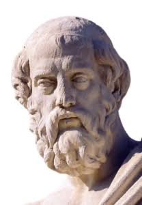
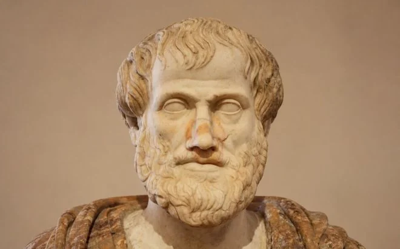
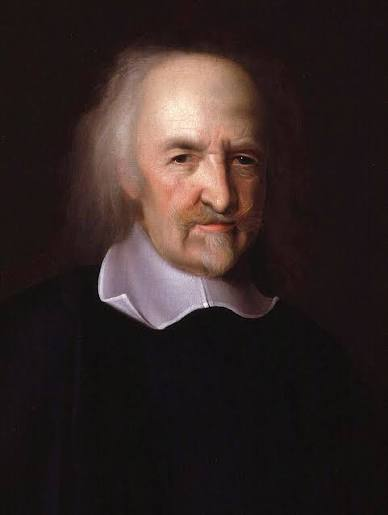
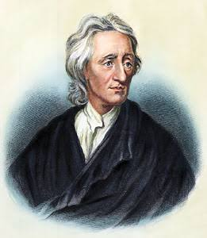
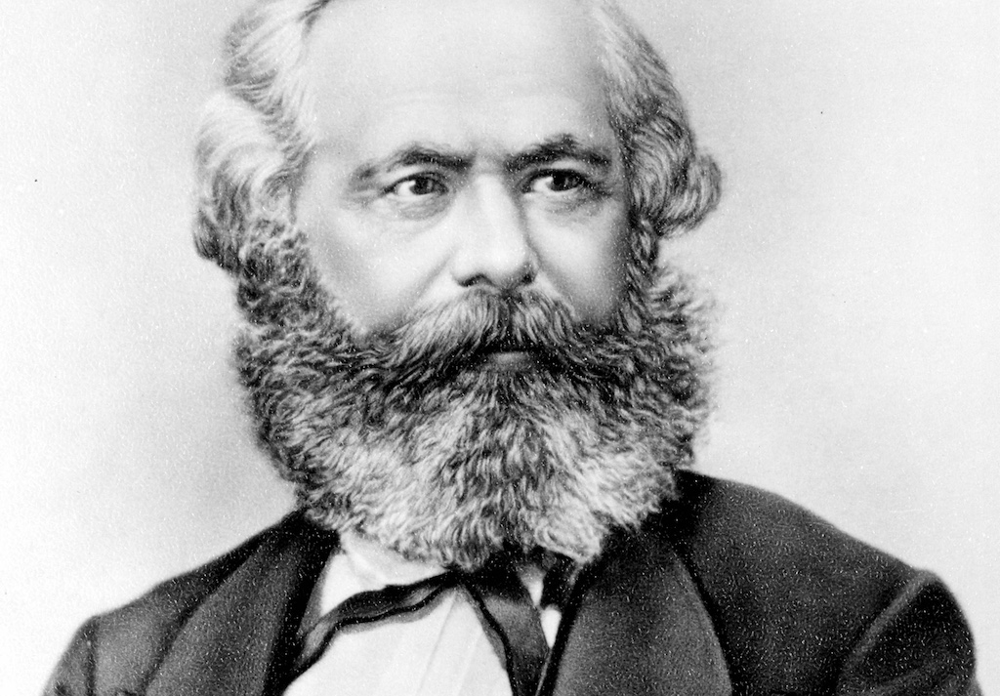
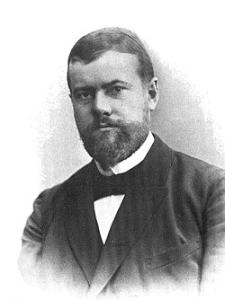
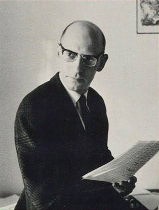

Platão foi um filósofo grego, discípulo de Sócrates e mestre de Aristóteles. Fundou a Academia de Atenas, a primeira instituição de ensino superior do mundo ocidental. Sua obra mais famosa é “A República”, na qual descreve uma sociedade ideal governada por filósofos-reis.

Aristóteles foi um filósofo grego, discípulo de Platão e tutor de Alexandre, o Grande. Fundou o Liceu e escreveu sobre diversos temas, como lógica, metafísica, ética, política e biologia. Sua obra “Política” é uma das primeiras análises sistemáticas sobre a organização da sociedade.

Nicolau Maquiavel foi um filósofo e político italiano, autor de “O Príncipe”. É considerado o fundador da ciência política moderna por separar a política da moral e da religião. Defendeu que o governante deve usar todos os meios necessários para manter o poder e a ordem do Estado.
Thomas Hobbes foi um filósofo inglês, autor de “Leviatã”. Defendeu que o homem é naturalmente mau e egoísta, e que a vida em sociedade só é possível com um contrato social, no qual os indivíduos abrem mão de sua liberdade em troca de segurança e ordem.

John Locke foi um filósofo inglês, autor de “Dois Tratados sobre o Governo”. Defendeu que o homem é naturalmente bom e racional, e que o governo deve ser limitado e garantir os direitos naturais à vida, à liberdade e à propriedade. É considerado o pai do liberalismo.

Jean-Jacques Rousseau foi um filósofo suíço, autor de “O Contrato Social”. Defendeu que o homem é naturalmente bom, mas a sociedade o corrompe. Para ele, o povo é soberano e deve participar diretamente das decisões políticas, e a vontade geral é a base da legitimidade do poder.
Karl Marx foi um filósofo e economista alemão, autor de “O Capital” e do “Manifesto Comunista”. Analisou a sociedade capitalista a partir da luta de classes e defendeu a superação do capitalismo por meio de uma revolução proletária e da construção de uma sociedade socialista.

Max Weber foi um sociólogo e economista alemão, autor de “A Ética Protestante e o Espírito do Capitalismo”. Definiu o Estado como a instituição que detém o monopólio do uso legítimo da força física e analisou a política como a disputa pela participação no poder.

Hannah Arendt foi uma filósofa política alemã, autora de “Origens do Totalitarismo” e “A Condição Humana”. Analisou o totalitarismo, a ação política e a vida ativa, defendendo a importância do espaço público e da participação cidadã na construção da liberdade.
Michel Foucault foi um filósofo francês, autor de “Vigiar e Punir” e “A História da Sexualidade”. Analisou as relações de poder, as instituições disciplinares e os mecanismos de controle social, mostrando como o poder se manifesta nas práticas cotidianas e nos discursos.
